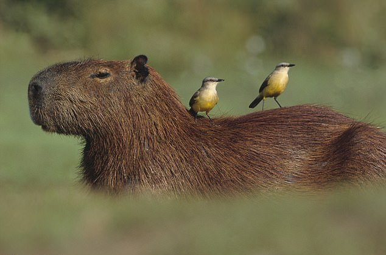

Friendliest Wild Animal: Capybaras
One of the very few things in this world on which everyone can agree is that capybaras are the friendliest wild animals on Earth. This giant, wild rodent, is about four-feet-long, and the average capybara weighs about 150 pounds.
Are capybaras friendly? The simple answer here is, yes! They are known to be super chill, they get along famously with cats, birds, crocodiles, camels, humans, and everything in between! Monkeys are especially fond of this semi-aquatic animal.

Despite the size of these creatures, these rodents are super friendly and respond well to human contact.
Calm and compassionate, capybaras adopt stray and runt animals and regularly serve as public transportation for birds and monkeys!
Capybaras are exceptionally social animals who grow achingly depressed if they don’t have at least one friend. They also need lots of space to roam, and a large pool or lake to wade whenever they want.
Though they probably wouldn’t mind if you approached them in their swamp of choice and hung out for a bit, it isn’t the wisest idea. Capybaras sometimes host ticks carrying Rocky Mountain spotted fever, and you don’t want to contract that!